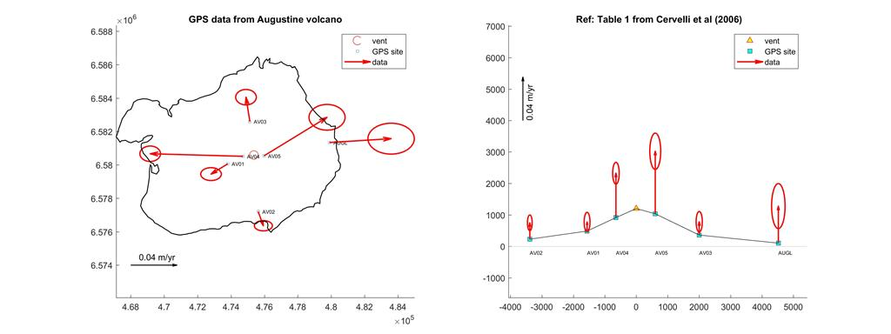
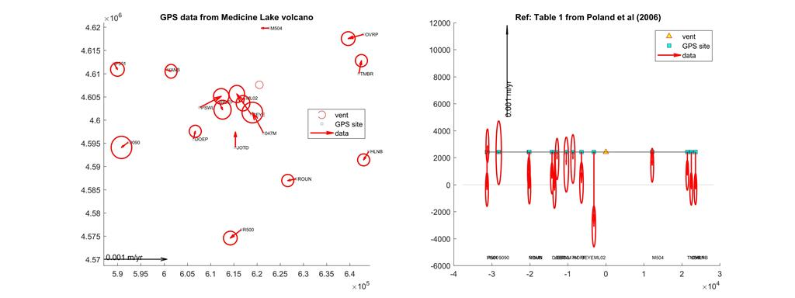

PreProcessing.m
M. Battaglia - mbattaglia@usgs.gov
Contents
Description
Version: (06/20/2017)
This program reads the GPS data file and plot the displacement vectors
Program I/O files
Input files
- InputDataFile.txt : text file with inversion parameters
- [GPSdatafile].txt : text file with GPS data
- map.txt : text file with volcano contour map
Ouput files
- [GPSdatafile]VPL.jpg : vector plot of GPS data
- [GPSdatafile]VPL.eps : vector plot of GPS data
To run the software
To run the compiled version
1 MATLAB Compiler

2 The following files must be in the same directory of PreProcessing.exe
- InputDataFile.txt
- [GPSDataFile].txt
- map.txt [optional]
3 Edit/update GPSDataFile.txt, InputDataFile.txt and map.txt
4 Double click on PreProcessing.exe
To run the MATLAB version
The software runs on 64-bit GNU/Linux, Mac OS X, or MS-Windows, and it requires Matlab 9.2 (R2017a) or later. It is not currently usable on any 32-bit platform, on Solaris, or with Octave.
1 The following files/*folders* must be in the same directory of PreProcessing.m
- functions
- InputDataFile.txt
- [GPSDataFile].txt
- map.txt [optional]
2 Edit/update GPSDataFile.txt, InputDataFile.txt and map.txt
3 Run PreProcessing.m
See the map created
Vector plot precursory deformation at Agustine volcano (AK): scale factor 0.05

Vector plot of long term subsidence at Medicine Lake volcano: scale factor 0.25

USGS Software Disclaimer
The software and related documentation were developed by the U.S. Geological Survey (USGS) for use by the USGS in fulfilling its mission. The software can be used, copied, modified, and distributed without any fee or cost. Use of appropriate credit is requested.
The USGS provides no warranty, expressed or implied, as to the correctness of the furnished software or the suitability for any purpose. The software has been tested, but as with any complex software, there could be undetected errors. Users who find errors are requested to report them to the USGS. The USGS has limited resources to assist non-USGS users; however, we make an attempt to fix reported problems and help whenever possible.
THE SOFTWARE IS PROVIDED AS IS, WITHOUT WARRANTY OF ANY KIND